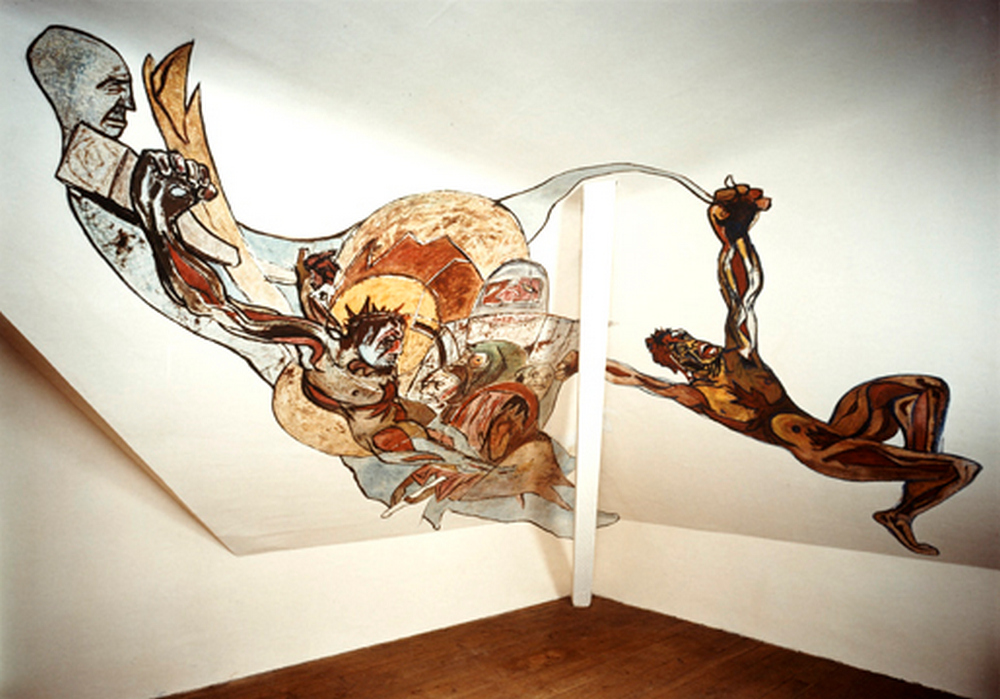
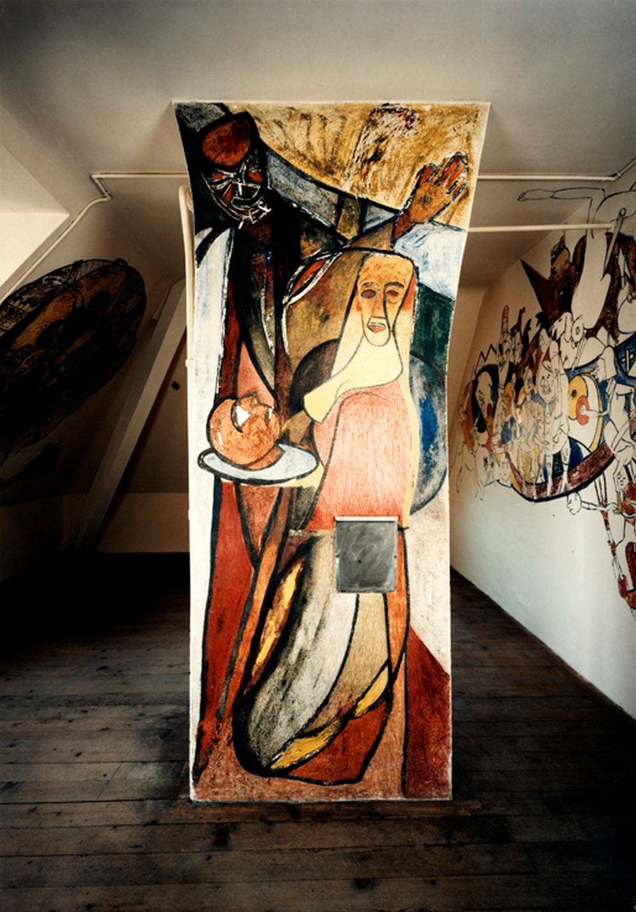

Die schwere Eingangstüre des Mietshauses im Berner Obstbergquartier öffnet sich, man steigt vier Treppen hoch, grauer, rauer Stein, Terrazzo vor den Wohnungseingängen, erreicht den Dachstock, geht über eine kleine Eisenbrücke und betritt eine geräumige Mansarde. Halb abgeschrägte Wände, nur rechts eine lange, gerade. Nischen mit Fenstern, überall krumme Winkel und Ecken, in der Mitte trennt der Kamin den Raum. Friedrich Dürrenmatt konnte in diese Mansarde einziehen, als seine Eltern 1942 zum wiederholten Mal umgezogen waren, diesmal an die Laubeggstrasse 49 in Bern. Hier hauste der junge Mann, nachdem er zuerst Germanistik, dann Philosophie zu studieren begonnen hatte, ohne wirklich zu studieren, trank mit Freunden und Kollegen nach Kneipenschluss im stillen Berner Auge des Weltkriegszyklons weiter, «der Lärm war manchmal beträchtlich», schrieb viel, «meistens sinnlose Pamphlete gegen die Stadt» (Dürrenmatt), und wurde von seiner strengen Mutter Hulda umsorgt. Heute kann man diese «Höhle» im Rahmen einer Führung betreten oder – wenn einigermassen unerschrocken – als Gast einer Berner Kulturinstitution bewohnen.
Der Bildzyklus
Dürrenmatt kämpfte mit der Frage, ob er Maler oder Schriftsteller werden wolle, und begann – «wahnwitzige Beschäftigung meiner öden Stunden» – , die Wände seiner Studentenbude mit Bildern zu bestücken, vermutlich von Juli bis November 1942. Gleich geradeaus, dort, wo sein Bett stand, stürzt eine muskelbepackte Gestalt rücklings in die Tiefe, nur noch lose mit einer «wilden Kreuzigung» und einer grau-grimmigen Eminenz im Hintergrund verbunden – solchen dramaturgischen Momenten gilt das Interesse Dürrenmatts, «nicht der Schönheit, sondern der Möglichkeit». Gegenüber am Kamin bietet die Tochter der Herodias im wallenden Gewand den Kopf Johannes des Täufers dar. Rechts, an der langen Wand, entdeckt man eine Barke, von unten aufgespiesst, vom fliegenden Nietzsche mit Hitlergruss aufgehalten oder verabschiedet, geladen mit skurrilen Gestalten – ein griechischer Held, aus seinem offenen Hemd starren Hitler & Co., drei Geistliche mit Heiligenschein an einem Gräberfeld, das trojanische Pferd, Spiessbürger, Professoren und noch mehr – eine irrwitzige «Querfahrt» durch die Apokalypsen der Zeit. Aus einer anderen Ecke schräg oben starrt das Antlitz der Medusa, ein Marienkäfer, nebendran gesetzt, scheint sie abzulenken. Die Beschreibung dieses «Durcheinanders» von «Wut, Protest, Hohn und Spott» könnte lange weitergehen. Worte greifen ohnehin zu kurz. Deshalb hat Dürrenmatt die Bilder wohl auch an die Wände gebannt. Denn: «Mein Malen und Zeichnen stellte eine Ergänzung meiner Schriftstellerei dar – für alles, das ich nur bildnerisch ausdrücken kann».
Dürrenmatt-Mansarde, 1942-1943, Bern. Foto: Dominique Uldry
Brutstätte von Dramen und Paradoxien
In diesem geschlossenen und zerrissenen Bildraum – die Kunstkritikerin Vachtova spricht von einem frühen Hauptwerk Dürrenmatts –, in dieser eigenwilligen, geradezu postmodernen Kombinatorik von Mythologie und Bibel, Antike und unsicheren gegenwärtigen Zeiten, an der alles zufällig und nichts beliebig ist, in diesem Stechen, Schreien und Schlagen, das lautlos von den Wänden lärmt, in diesem Pandämonium, das jede kunstwissenschaftliche Buchhaltung sprengt – wenn schon ist Georg Grosz näher als der damals gefeierte Wandmaler Hans Erni –, brodelt nicht nur, was später die Bühnen erobern wird: Dürrenmatts Inszenierungen und Brechungen der «grossen Abenteuer der Menschheit». In diesem Raum gärt auch, was Dürrenmatt, der «Gedankenschlosser», seinen Leserinnen und Zuschauern in Grotesken, Vexierbildern und Tragikomödien theologisch bis in sein Spätwerk «Durcheinandertal» zumuten wird, expressiv, abgründig, ätzend.
Protestant – Bild – Wort
«Ich setzte mich mit meiner Wandmalerei (...) gegen die Idylle zur Wehr, die mich umgab.» Der frühe Dürrenmatt verstand sich «als ein in weitestem Sinn entwurzelter Protestant, behaftet mit der Beule des Zweifels, misstrauisch gegen den Glauben, den er bewundert, weil er ihn verloren», als Protestant gegen die zähe Bürgerlichkeit Berns, gegen jegliche päpstliche «Rechthaberei», als Protestant auch gegen den Protestantismus. Glaube und Existenz sind radikal subjektiv, das hatte Dürrenmatt nicht zuletzt bei Kierkegaard entdeckt, zu dem er eine Dissertation plante, dann aber abbrach. Als «Einzelgänger» widersetzte er sich «jedem gemeinsamen Nenner», verstand sein Zeichnen und Schreiben als Resultat seines «Andenkens gegen die Welt». Dieses wurzelt tief im Kosmos Konolfingens, wo er aufwuchs, zwischen Metzgerei, Bahnhof und Friedhof, und im protestantischen Pfarrhaus, aus dem er sich in seiner Mansarde – nun in der «Stadt», die ihm zur Metapher wurde – malend und schreibend herauswand: in den biblischen Geschichten, die ihm seine Mutter in hochdramatischen Schilderungen nahebrachte, in den antiken Sagen, die ihm sein stiller Vater Reinhold im Zusammenhang mit Sternbildern erzählte, in Bildbänden mit vergilbenden Reproduktionen Dürers, Michelangelos, Rubens, Böcklins, die auf den Bücherregalen standen und nun ihre Schatten und Schlaglichter auf die Wände der Mansarde werfen. Die Möglichkeit zur Bildwelt und den Inszenierungen des Katholizismus zu konvertieren, verwarf er später. Seine eigenen Bilder begleiteten ihn aber, jenseits und diesseits der Sprache, es sind Denk-Male, dass das Wort Grenzen hat, dass es nicht am Anfang ist, sondern aus Szenen und Bildern herauswächst und hinaus muss in die Inszenierungen des Menschlichen, auf die Bühnen der Gegenwart, dem Publikum und der Kritik ausgesetzt – seine Befreiung.
Der Gekreuzigte
Wenn Dürrenmatt erwachte, muss er in das Gesicht des Gekreuzigten an der Wand über seinem Bett geschaut haben. Er nennt die «skurrile Kreuzigungsszene» immer zuerst, wenn er von diesen Bildern spricht. Für ihn war die Kreuzigung «Skandal», den er in seiner Aktualität zuspitzte. «...unzählige Menschen sind auf unvergleichlich schrecklichere Art gestorben als Jesus von Nazareth. Nicht der gekreuzigte Gott sollte unser Skandalon sein, sondern der gekreuzigte Mensch; vermag doch der Tod – und sei er noch so fürchterlich – für einen Gott nie so schrecklich wie für einen Menschen zu sein: Der Gott wird wieder auferstehen.» Auch die Auferstehung, wie er sie im Stück ‹Meteor› auf die Bühne bringt, war für ihn ein Skandalon. Dieses besteht darin, dass ein Mensch immer wieder stirbt und immer wieder aufersteht. «Er vermag, gerade weil er das Wunder am eigenen Leib erfährt, nicht daran zu glauben.» Überhaupt: «Das Christentum, das sich nicht als Skandalon begreift, hat keine Berechtigung mehr». Paulus, der «exponierteste Posten des Christentums», der diese Torheit des Kreuzes theologisch umkreist, hat ihn fasziniert. So leuchtet die Paradoxie des Kreuzes in der paradoxen Struktur vieler seiner Gestalten, Szenen und Stoffe immer wieder auf, in den Dramaturgien des scheinbar Unscheinbaren, des verschoben Verschrobenen, des Scheiterns, des Zweifels, der Konfrontation auf Biegen und Brechen, der schutzlosen, abenteuerlichen Liebe. Glaube ist der Niederlage ausgesetzt, als dramatisches Dennoch, Danach, Überhaupt-Nicht. Und rechts vom Gekreuzigten beginnt das grosse Fallen, zuerst noch auf Gott zu – «Er liess uns fallen und so fallen wir denn auf ihn zu», so lautet der Schlusssatz in der frühen Erzählung «Der Tunnel» –, später ins Nirgendwo, nie aber ins Irgendwo. Kein Wunder wurden diese Bilder der Mansarde von Nachmietern übertüncht und erst vierzig Jahr später wieder freigelegt.
Dürrenmatt-Mansarde, 1942-1943, Bern. Foto: Dominique Uldry
Endspiele
Ein ähnliches Thema schlägt die Darbietung des Haupts Johannes des Täufers gegenüber am Kamin an. Dürrenmatt faszinierten «Endspiele», nicht nur im Schachspiel, einer seiner vielen Passionen. Seine Figuren positionierte Dürrenmatt später auch auf der Bühne so, dass es, ohne Notwendigkeit, zur schlimmstmöglichen Wendung kommen musste, in der erst, wie er postulierte, ein Gedanke zu Ende gedacht ist: Im abgehackten Haupt auf dem Servierteller, in den Endspielen des «Besuchs der alten Dame» oder der «Physiker», immer wieder spitzte Dürrenmatt existentielle, theologische Fragen zu, die Fragen nach wahnwitzigem menschlichem Plan und Zufall, nach Macht und Ohnmacht, nach Recht und nach der unmöglichen Möglichkeit der Gnade, – wie Kurrubi, die mit dem Engel nach Babylon kommt, als Gnade alles durcheinander bringt und nach Irrungen und Verwirrungen mit dem Bettler Akki entrinnt. Die schlimmstmögliche Wendung gewinnt bei Dürrenmatt auch theologische Tiefe. Solche Endspiele finden rechts an der Wand ihre Fortsetzung. Dürrenmatt verfolgte das biblische Motiv der Apokalypse in seinem Schreiben und Zeichnen obsessiv weiter, gleich wie den Turmbau, Inbegriff menschlicher Hybris, Erinnerung an die Zukunft: «Was die Menschheit hinterlassen wird, sind ihre Ruinen.» Da steht man in dieser Mansarde, abgestossen und eingekreist von den Menetekeln des Unfertigen, Abstürzenden und Unversöhnten, mitgerissen, erinnert sich an ein anderes, frühes Hauptwerk, den Römerbriefkommentar Karl Barths, dessen expressiver Radikalität sich Dürrenmatt verwandt fühlte, und denkt, nun wieder im Treppenhaus, bevor die Türe zufällt: Diese Mansarde – Schreckenskabinett, Kapelle des Protests und Werdens – ist eine Inspiration für jede Theologie, die zeitgenössisch ist, ohne die Tiefe der Geschichte zu vergessen, die Dramatik des Scheiterns, den unendlichen Humor der Gnade – und das «Lachen des Vorhangs, der fällt» (H. Loetscher).
Dr. theol. et phil. I Christoph Morgenthaler war Professor für Seelsorge und Pastoralpsychologie an der Theologischen Fakultät der Universität Bern und ist seit 2012 emeritiert
Weitere Artikel von {{author.author}} finden Sie hier:
Zur Vertiefung:
- Erismann, Peter Edwin/Weber Ulrich (Hrsg.) (1995): Friedrich Dürrenmatt. Die Mansarde. Die Wandmalereien aus der Berner Laubeggstrasse, Zürich [Mit einem Essay von Ludmila Vachtova].
- BSchweizerisches Literaturarchiv/Kunsthaus Zürich (Hrsg.) (1994): Friedrich Dürrenmatt. Schriftsteller und Maler, Bern/Zürich.
- Centre Dürrenmatt Neuchâtel (Hrsg.) (2003): Dürrenmatts Endspiele mit Texten und Bildern von Friedrich Dürrenmatt und Beiträgen von Pierre Bühler und Ulrich Weber, in: Cahier No. 7, Bundesamt für Kultur/Schweizerisches Literaturarchiv.
- Bühler, Pierre: «[D]ieser zähschreibene Protestant und verlorene Phantast». Der junge Dürrenmatt im Kampf mit seinem Glauben, in: Mauz, Andreas/Weber, Ulrich (Hrsg.) (2015): «Wunderliche Theologie». Konstellationen von Literatur und Religion im 20. Jahrhundert, Göttingen/Zürich., 199-219.